I find it poetic that my ex-wife hated bad poetry
& cheated on me with a man who writes bad poetry
By Anis Mojgani, from the book “In the Pockets of Small Gods”
We had taken Zepplin out to the nearby baseball field
so he could chase birds to his heart's content.
We had spent the night moving our two skins into one
until the sun rose and then went to the nearby diner
patroned by old men and served by old women to eat eggs and toast and
then under the early morning gray light
walked back to the house at the top of the curving hill
and fucked again before falling asleep
and then waking in the late afternoon to take the dog for a walk.
Beside the diamond was an electric box covered in bees,
all of them consumed with the hum of the metal,
loving its surface with their bodies.
While Zepp wandered the scents through the forest
we took turns practicing jump rope with his leash,
excavated our hearts to share silly walks with one another,
made up songs on the spot, unafraid to look wrong to the other.
When Zepp came bounding out of the trees
literally tumbling down the hill
a scream in the air coming from out the bunny in his jaws
we grabbed him by the scruff of his neck
made him drop it but didn't know what to do
with the rabbit's dying but not yet dead young and torn body.
Neither of us could start our morning with killing something
so we leashed the dog and leaving it behind us, walked for home
our hearts shaking, holding each other's hand.
Years later, one of her affairs was with a man who knows how to quarter a
deer. He was neither the first nor the only.
But he knew how to put up a wall and take apart
the engine of a motorcycle. Knew how to play the piano.
He who was married to my wife's closest friend in Texas.
He who that summer would sit down across the table
time and time again to share brisket with me.
He who visited her in my hometown, stayed
less than two miles from my parents, slept with her
in the same house that she and I had slept in years prior
the night before we flew off to our honeymoon. Who
when he left his wife for mine
took their copies of my books with him.
He knew how to shoot and how to cut the throat
of a quivering animal, skin it once dead,
and who if needed to
could probably pull a rabbit
out of a hound dog's mouth
and for the rabbit's own good
step down on its wet neck. Something
neither I nor her
were able to do.
 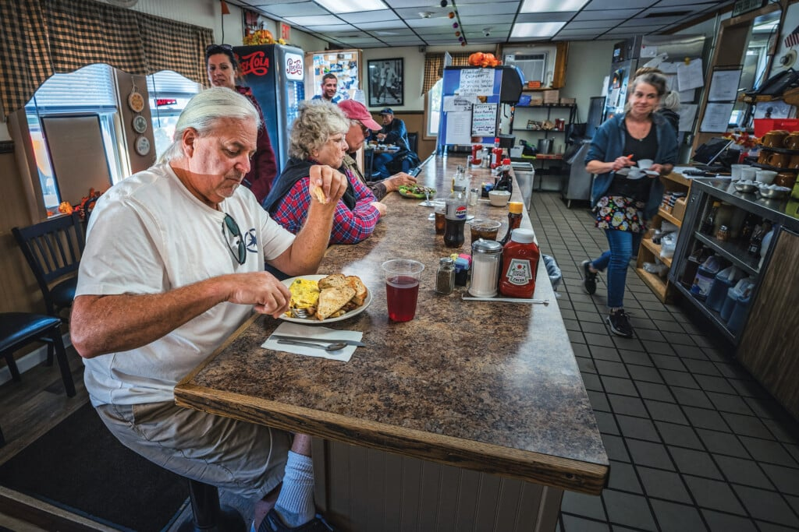
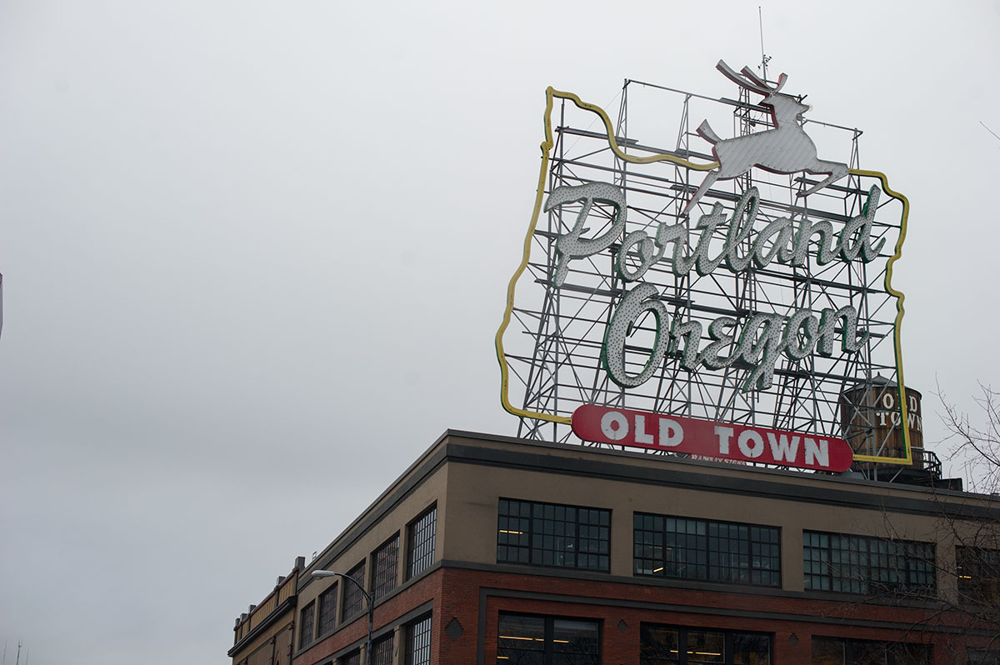
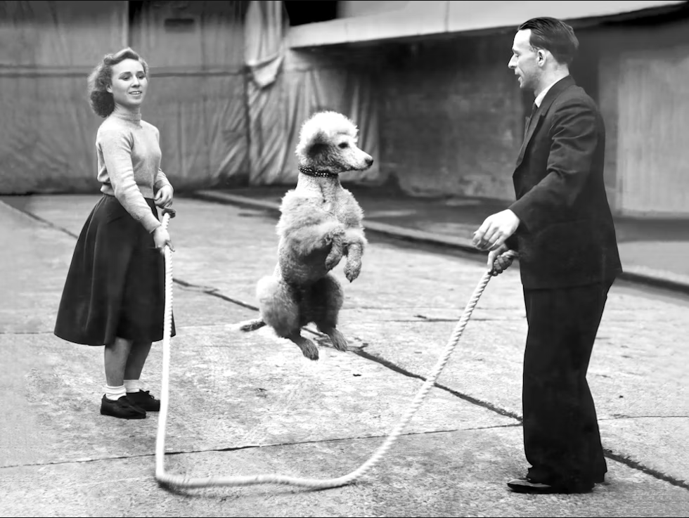
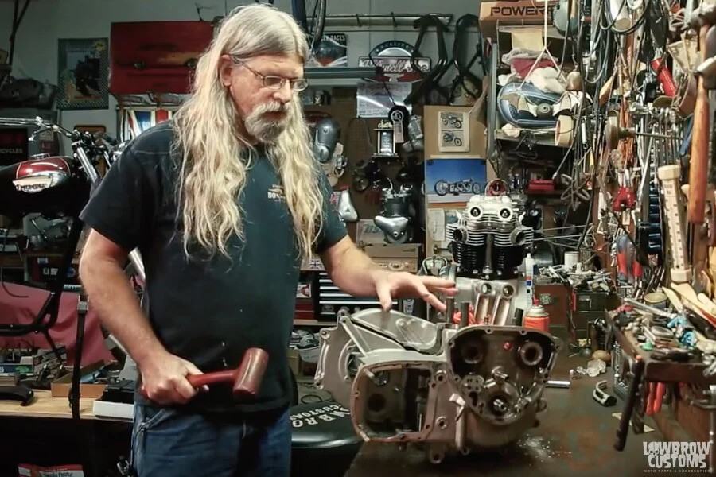
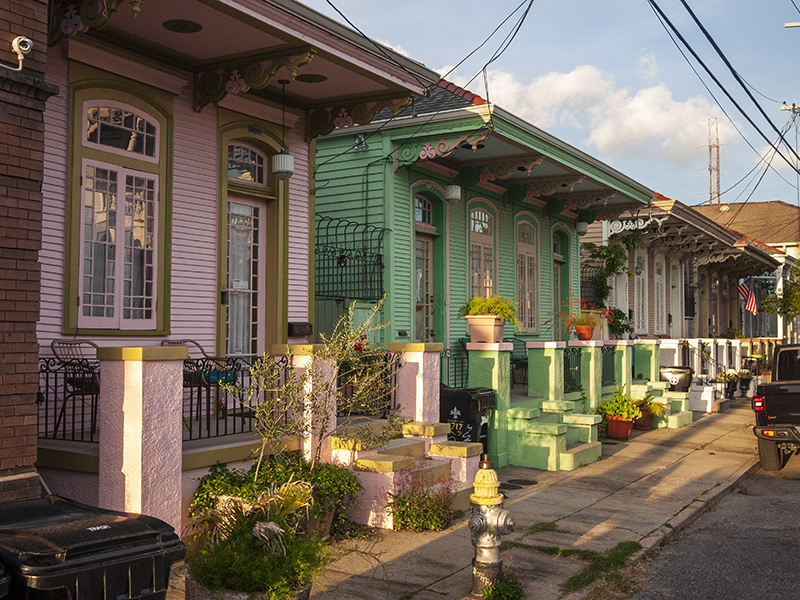
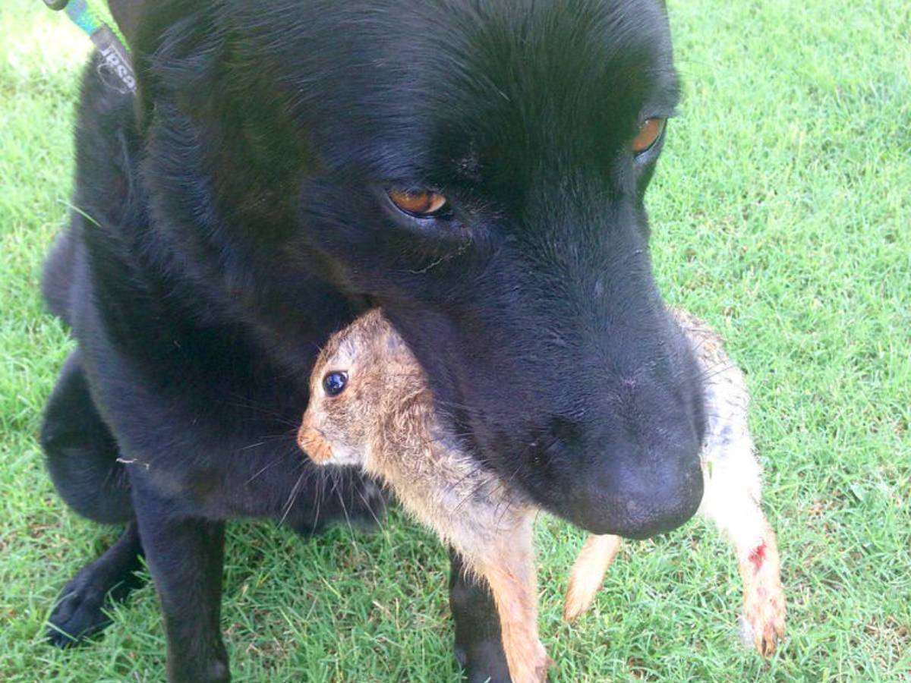
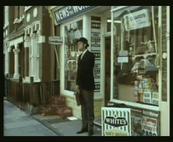
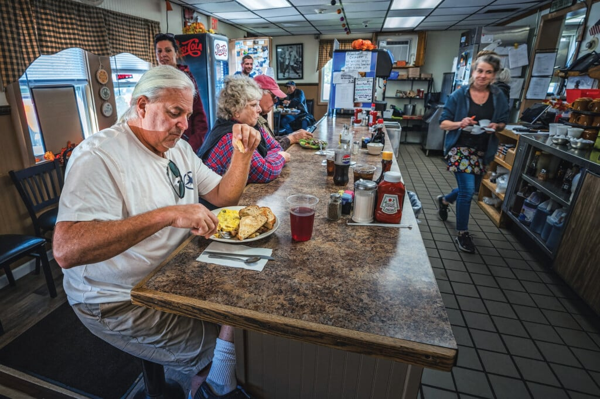
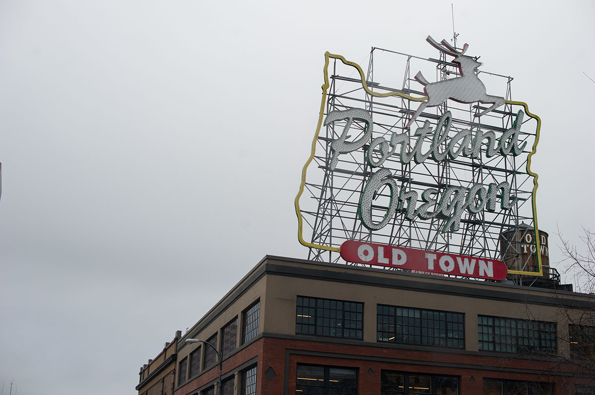
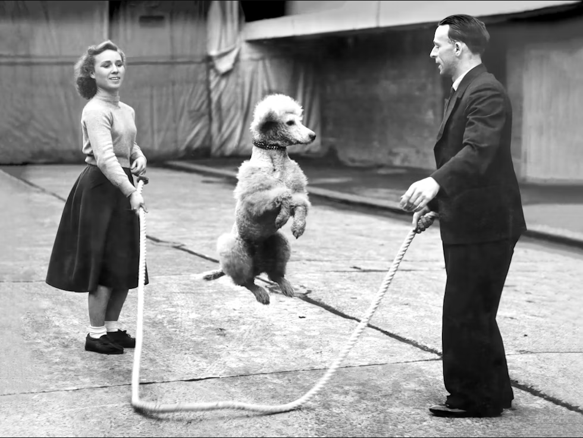
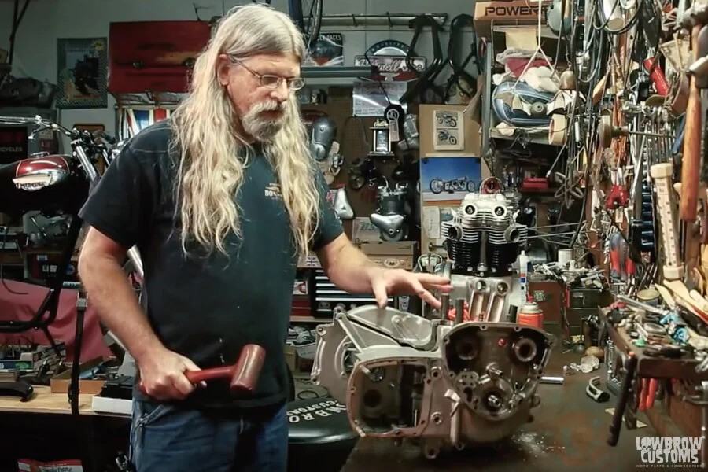
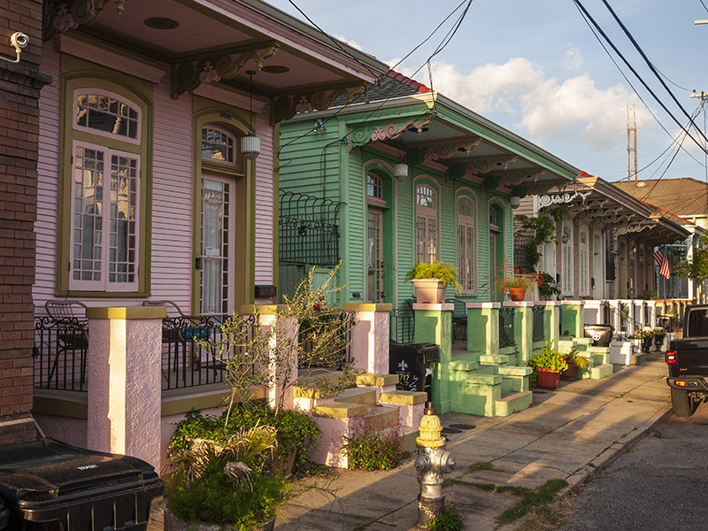
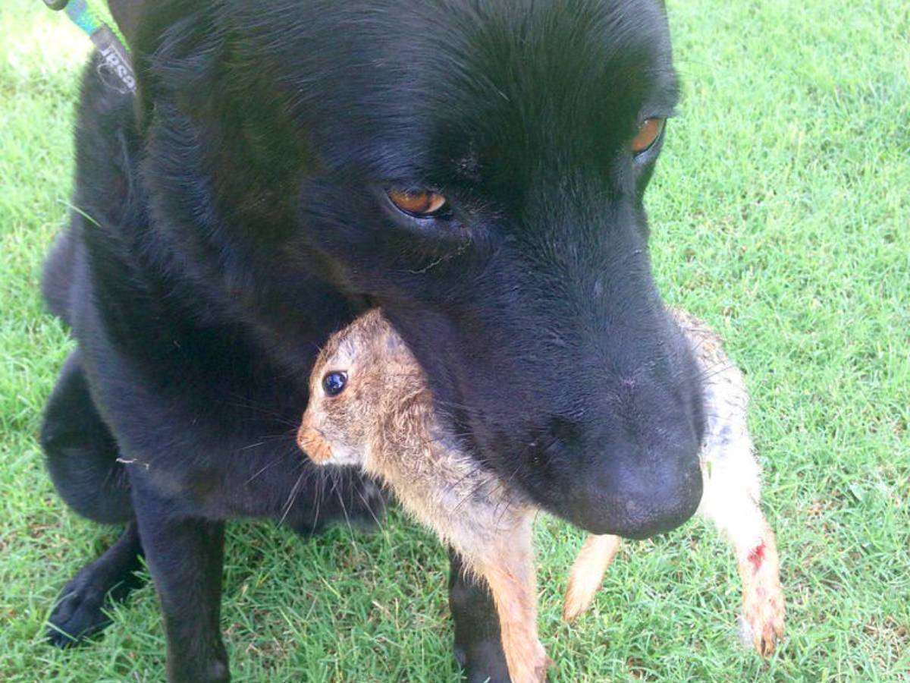
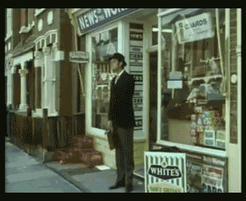